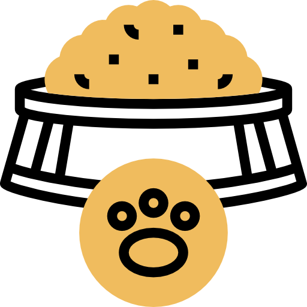

Alimento
Brindamos todo tipo de alimentos, para su perrito, gato o roedor, puedes encontrar desde comida para bebes hasta comidas en bolsa.
Brindamos todo tipo de alimentos, para su perrito, gato o roedor, puedes encontrar desde comida para bebes hasta comidas en bolsa.

Encontrarás desde pelotas y palos de mascado, para el desarrollo de los dientes de tu mascota, hasta peluches que brindan tranquilidad, calor y paz.
La ropa de perro mas original y con la mejor calidad lo encuentra aqui en "Tu amigo fiel", desde accesorios, bandanas, casacas y chompas.
El cuidado de la higiene de tu mascota incluye mantener su cabello, ojos, oidos y piel; es por ello que te brindamos los mejores herramientas de limpieza.